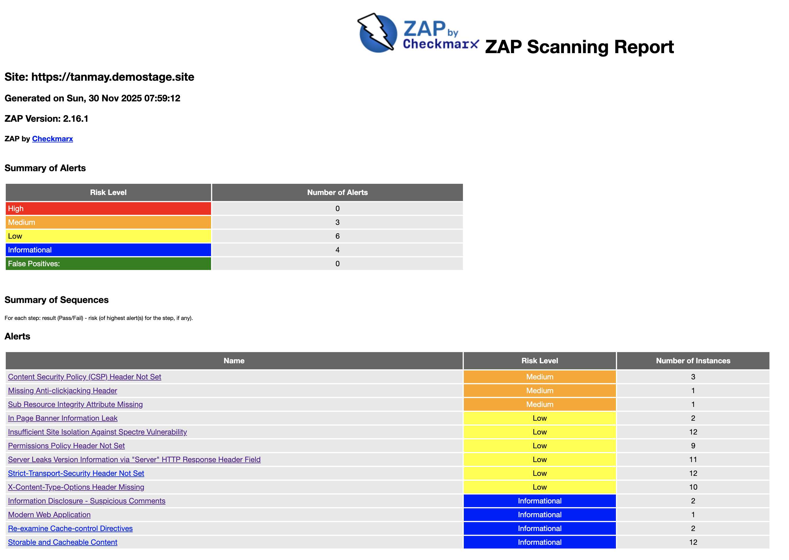

Employee Reimbursement System — Sast & Dast Reports
Sast Report
This report summarizes the SonarQube SAST metrics for both backend and frontend components of the ERS platform. It highlights code quality, security, reliability, and maintainability metrics.
1. ERS Backend – SAST Metrics
| Metric | Value | Notes |
|---|---|---|
| Code Smells | 4 | Minor maintainability issues |
| Reliability Rating | A (1.0) | No reliability risks |
| Test Coverage | 83.5% | Well-tested backend |
| Security Rating | A (1.0) | No security issues detected |
| Bugs | 0 | No runtime defects |
| Vulnerabilities | 0 | Secure code |
| Security Hotspots | 0 | No hotspots |
| Duplicated Lines | 1.7% | Low duplication, maintainable |
2. ERS Frontend – SAST Metrics
| Metric | Value | Notes |
|---|---|---|
| Bugs | 1 | Should be reviewed and fixed |
| Reliability Rating | B (2.0) | Moderate reliability concern |
| Security Rating | A (1.0) | No vulnerabilities |
| Vulnerabilities | 0 | Safe code |
| Code Smells | 4 | Minor maintainability issues |
| Security Hotspots | 0 | No hotspots |
| Duplicated Lines | 0.0% | No code duplication |
DAST Report
Target: https://tanmay.demostage.site
Generated by: ZAP 2.16.1
Summary
| Severity | Count |
|---|---|
| High | 0 |
| Medium | 3 |
| Low | 6 |
| Informational | 4 |
Total Alerts: 15

Priority Issues
1. Content Security Policy (CSP) Header Not Set
- Risk: Medium
- Affected URLs:
/,/robots.txt,/sitemap.xml - Description: CSP is a security feature that helps prevent attacks like Cross-Site Scripting (XSS) and data injection by specifying trusted sources of content for a website. When the CSP header is not set, browsers have no instructions on which content is safe, leaving the site vulnerable. Adding a CSP header mitigates these risks by restricting the sources of scripts, styles, images, and other resources.
2. Missing Anti-clickjacking Header
- Risk: Medium
- Affected URL:
/ - Description: The page is vulnerable to clickjacking attacks, where an attacker could trick users into interacting with hidden elements. Adding the X-Frame-Options or Content-Security-Policy frame-ancestors header can prevent this.
3. Subresource Integrity (SRI) Attribute Missing
- Risk: Medium
- Affected URL:
/(external CSS/JS assets) - Description: External resources can be tampered with if integrity checks are missing. Using the integrity attribute ensures that the resource loaded matches the expected hash, preventing malicious modifications.
Next: Test Planning